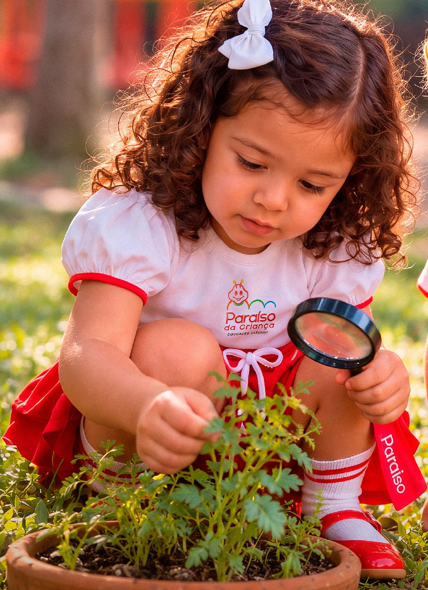
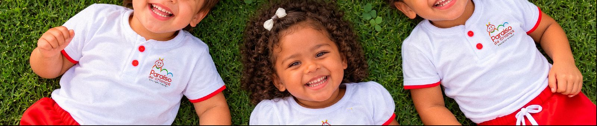
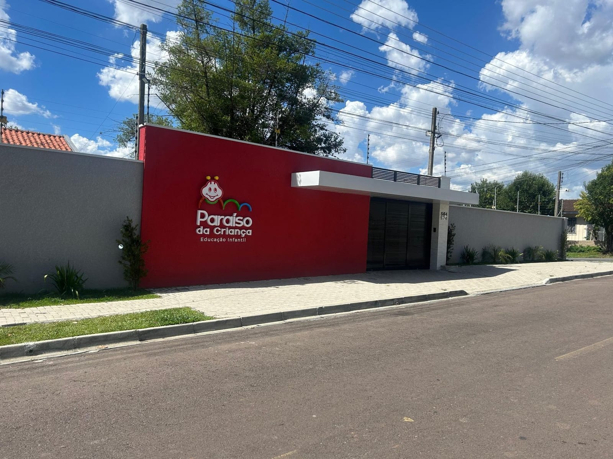
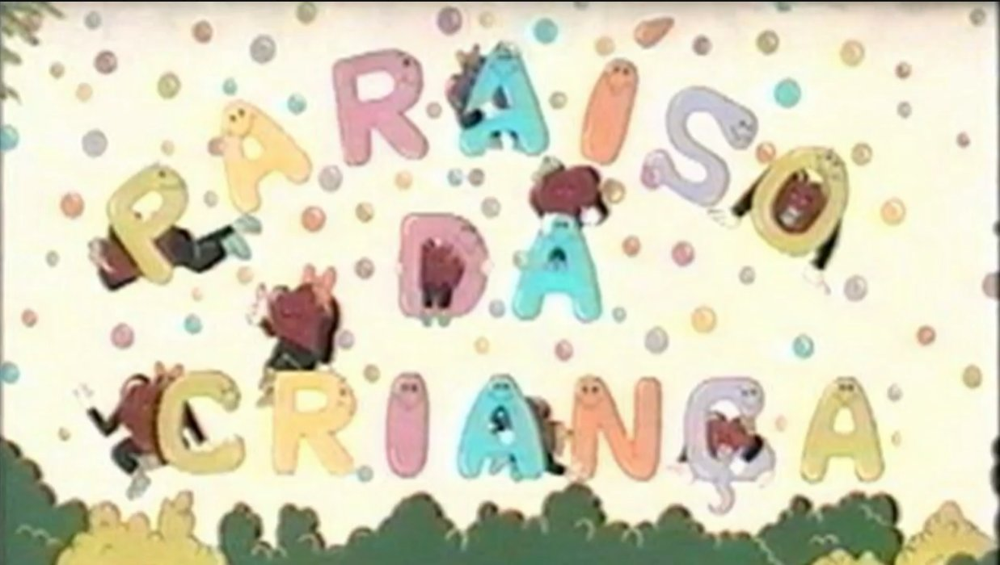

Natureza que inspira a infância.
Um lugar para descobrir o mundo, viver a liberdade de brincar e crescer cercado de experiências que fazem sentido.

A infância acontece nas pequenas grandes descobertas.
Acreditamos que a infância precisa de tempo para observar, liberdade para imaginar, espaço para descobrir e gente para se conectar.
No Paraíso, a natureza, o brincar e as relações de cada dia abrem caminhos para a criança explorar o mundo, sempre com respeito e intenção pedagógica.

Cada fase da infância tem seu tempo.
Do Berçário ao Nível 5, acompanhamos a criança com cuidado, vínculo e descoberta.

Os primeiros encontros com o mundo.
Colo, vínculo e descobertas com todos os sentidos, sempre no ritmo de cada bebê. O Berçário acontece na Casa Nuvem.
Conheça o Berçário
Um mundo inteiro para explorar.
Do Maternal 1 ao Nível 5, a criança investiga, cria e convive com a natureza por perto. Casa Sol, Casa Lagos, Espaço Lua e Espaço Estrela.
Conheça a Educação InfantilO mundo também é uma sala de aula.
São mais de 2.500 m² de grama, terra, árvores e ambientes adaptados a cada idade.
Aqui, a criança tem espaço para investigar, se movimentar e imaginar.

Aqui, cada espaço tem potencial para despertar uma descoberta.
Conheça nossos espaços
Aprender é viver a experiência.
Nossa proposta reconhece a criança como protagonista das próprias descobertas.
Curiosidade, investigação, brincar e convivência caminham juntos, com a natureza como fonte permanente de inspiração.
Quem vive o Paraíso, indica o Paraíso.
Muitas famílias chegam até nós por indicação. Algumas viveram a infância aqui e hoje trazem os próprios filhos.
-
VÍDEO A PRODUZIR #05Mãe ou pai conta como é o dia a dia do filho(a) no Paraíso.
-
VÍDEO A PRODUZIR #06Família em que o pai ou a mãe estudou no Paraíso e hoje matricula o próprio filho(a).
-
VÍDEO A PRODUZIR #07Família do Berçário fala sobre acolhimento e confiança.


Uma história construída com infância, afeto e dedicação.
Desde 2002, a Escola Paraíso da Criança se dedica à Primeira Infância.
São mais de 20 anos de vínculos e histórias compartilhadas com crianças, famílias e educadores, com a mesma essência do início.
Há descobertas que precisam ser vividas de perto.
Venha conhecer os espaços, sentir a natureza e ver como a infância acontece no Paraíso.